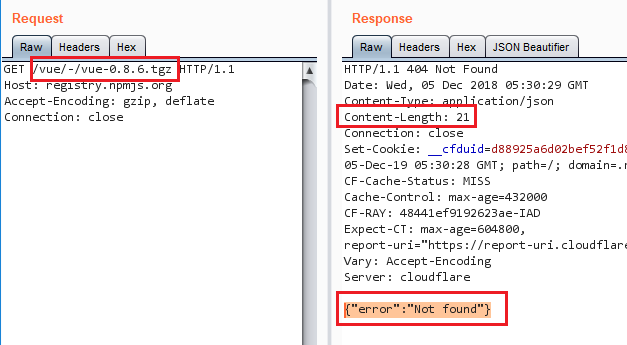

tl;dr: HEAD returns file size in Content-Length response header.
A few months ago, I did a side project of creating a Go package for npm. It was before the current dumpster fire that is event-stream. The idea was to be able to query npm and get information and packages.
The Problem
As part of the metadata check, I wanted to see if a package's tarball size matches the size mentioned in the metadata. Downloading the file and checking the size works but is slow because the file has to be downloaded.
The Solution
Running HEAD on a tarball, does not return the file but the response will have the Content-Length header. The header will have the size of the file.
In RFC 2616 - Hypertext Transfer Protocol -- HTTP/1.1 - Section 14.13 Content-Length we can read:
The Content-Length entity-header field indicates [...] in the case of the HEAD method, the size of the entity-body that would have been sent had the request been a GET.
npm Registry Documentation
The npm APIs were a bit hard to find. Here's a link and you're welcome:
Everyone seems to be using the app. 17K Github stars for the app and only 19 for the documentation. Github stars are how people rank themselves in the JS ecosystem right?
Hint: Hit me up if you want to do some supply chain attacks on the app itself.
Package Metadata
Full package metadata can be access by sending a GET request to https://{{registry_url}}/{{package_name}} (if the package name is not unique, it will do a search but let's not worry about that). E.g. https://registry.npmjs.org/lodash. Lodash is the most depended upon package according to https://www.npmjs.com/browse/depended.
Retrieve short package metadata by sending a GET request to the same URL but with the following header:
Accept: application/vnd.npm.install-v1+json
You can see the tarball address in the screenshot.
Note: While the addresses are http, npm registry will redirect them to https.
Now we can run HEAD to get the size.
The Bug
This has a feature bug. The header returns the size of the response. If the file is not there or the response contains an error, then the header value will not be accurate and I hit some false positives. For example, Vue.js 0.8.6.
According to the metadata it should be there at http://registry.npmjs.org/vue/-/vue-0.8.6.tgz but it does not exist on npm and returns a 404.
 Vue.js 0.8.6 tarball not foundWhich means HEAD will not have a Content-Length header (or 0 if we are unmarshalling the response into a struct).
Why does it Work for tarballs (most of the time)?
Now you could say this method will work for most files and you would be correct. But tar.gz files are different.
Let's assume you want to modify a JavaScript file without altering the size. Remove comments, whitespace etc and add your own code. One character removed for every character added. If it's done to multiple files in the package, the total size of files will stay the same. If you tar them, they are all concatenated into one big file. tar of the modified version and the original version will have the same size (I think).
That's when gzip jumps in. It's a compression tool, uses dictionaries and everything. It's going to be impossible to have modified files that produce the same size after compression. The dictionary and other artifacts will be different.
Correction: My esteemed colleagues, more specifically Robert Hill and Travis Biehn1, have pointed out that gz files can be padded with random files and still be valid. If your modified package is smaller than the original, you can just pad it to reach the original size. Of course, why didn't I think like that? I have done this to PNGs for data exfil. Well there goes my patent.
Conclusion
This is a nice trick. I explained it to a group recently and was asked why I did not download the files instead. I felt damn clever after explaining it. Let me have my moment.
- In the DEF CON video I say "my boss is sitting right here" and point to Travis. Fortunately for him, he is not my manager. [return]